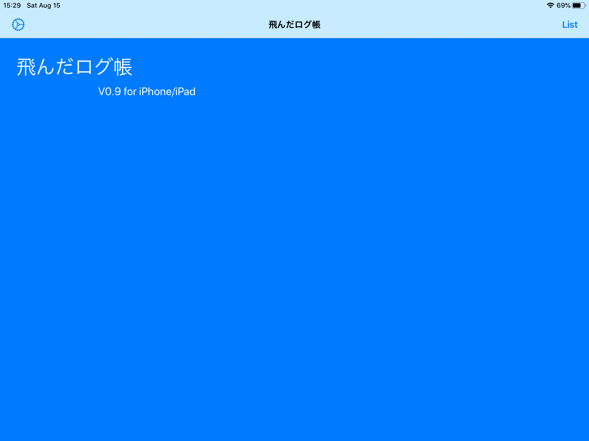
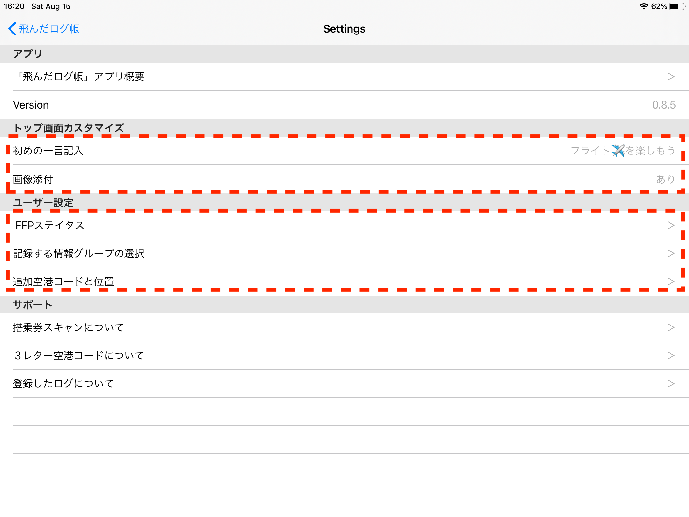
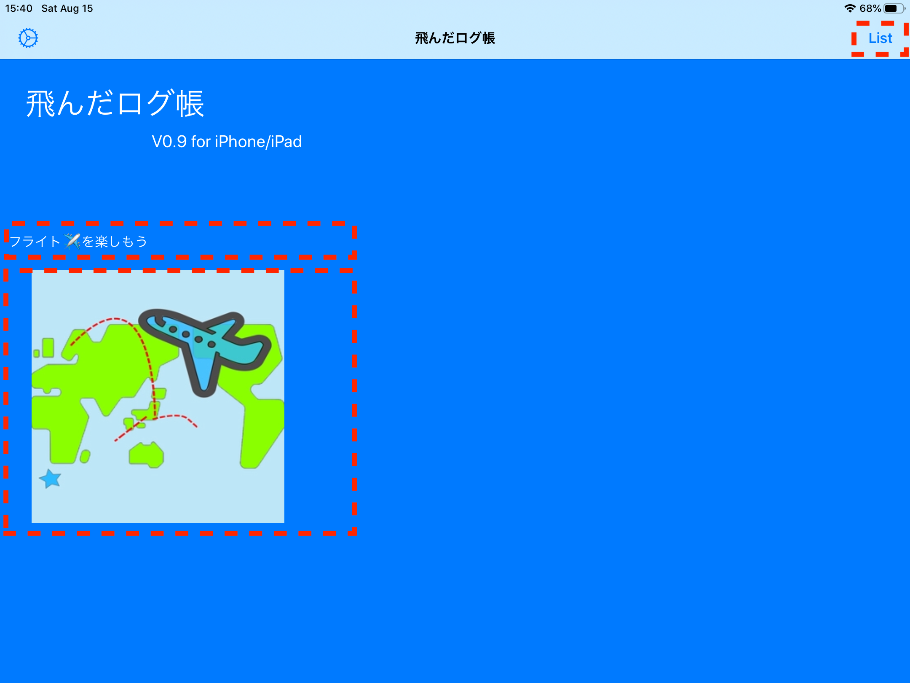
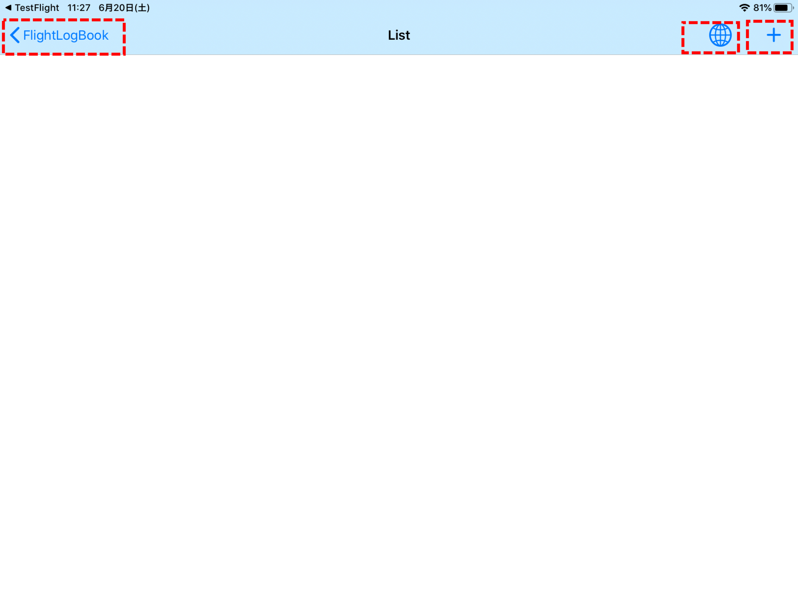
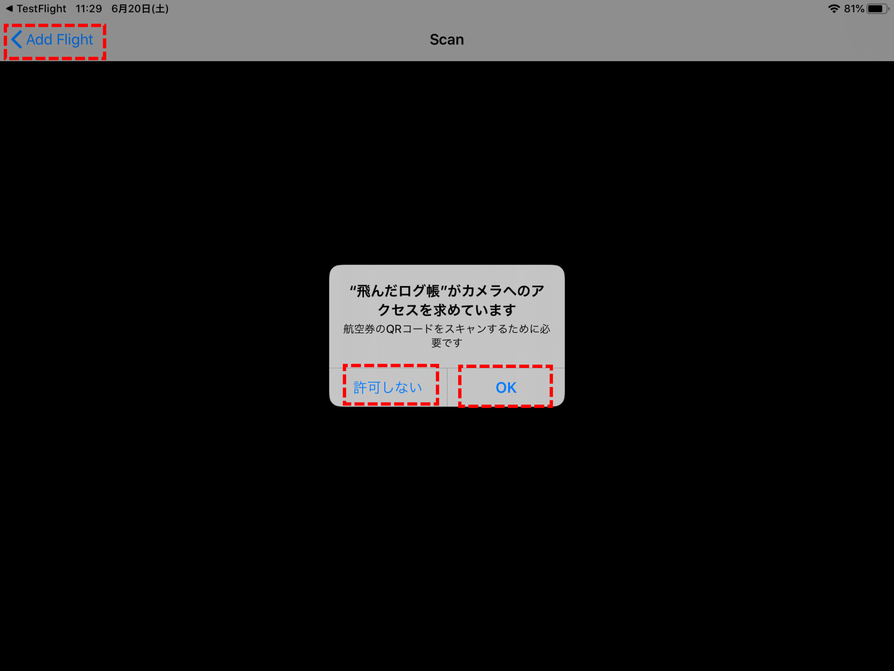

「飛んだログ帳」の使い方説明
2020/08/15
「飛んだログ帳」アプリの使い方を説明します。最新版は、ver.0.9 です。
改訂履歴)
- v0.9 記載できる項目追加。修正画面追加。
- v0.8.2 搭乗券のスキャン強化（対応航空会社追加、写真からのスキャン）
- v0.8.1 地図に表示する空港の座標で間違い訂正。海外の空港追加。
- v0.8 初版
改善予定)
- 登録件数増加を予定しています。
- 登録されたログの、日付順など並べ替えや検索機能を予定しています。
対象機種）当アプリは、 iOS 13.2 以上で動きます。iPhone6S 以降 / iPad第五世代以降 /iPad Air2 以降が該当します。
説明画像) 説明資料は一部、開発中のものを含みます。iPad版での画像を使います。iPhone版 は少しイメージが違うかもしれませんが、基本的には iPhone に合うように画面設計しています。iPad だと余白が多くなります。
１） アプリのアイコンクリックで起動します。起動画面はシンプルです。

２）トップ画面からは、設定画面/一覧表示画面に遷移できます。次は、「設定ボタン」を押して設定画面に飛ばします。

設定画面は、アプリの概要説明や各種設定項目があります。FFPステイタスセルを押します。

ANA,JALのマイレッジプログラム（FFP）のステイタスを設定できます。この値はフライトログ登録時のデフォルトとして使用します。次は、設定画面から、記録する情報グループの選択セルを押します。

表示／修正画面で表示される情報グループの 表示／非表示 を切り替えることができます。使用しない情報グループを表示しないと画面がすっきりします。アプリ内には全ての項目を保持しているため、一度入力した値は非表示でも保持されます。表示／非表示設定は、いつでも切り替えて使うことができます。次は、設定画面から、追加空港コードと位置セルを押します。

未登録の空港コードを３つまで追加できます。世界地図に簡易航空路をプロットできないときに追加するといいでしょう。また、空港コード／空港名称の自動変換でも使われます。アプリ内で登録済みの空港コードは、「設定／サポート／３レター空港コードについて」に記載されています。
また、設定画面にはトップ画面用の、初めの一言 / 画像 を設定することもできます。これでトップ画面の殺風景感から開放されますね。
３）戻るボタンを押してトップ画面に戻ります。

４）トップ画面に、設定画面で設定した 初めの一言 / 画像が表示されます。次は「Listボタン」を押して一覧画面に飛ばします。

５）登録されているログの件数が0件の一覧画面が表示されます。この画面からはログ登録画面/地図表示画面に遷移できます。次は「＋ボタン」を押し登録画面に飛ばします。登録可能件数は現時点では20件です。すでに20件登録されている場合はエラーとなり、次の画面を表示することはできません。

登録画面では、主要な項目のみを入力します。日付と便名は必須入力です。ここで入力した項目を含め、必須以外の項目は、修正画面で修正することができます

搭乗券に記載されている二次元コード（QRコード等）には、全てではありませんが、フライトに関する情報が含まれていますので、それを取り込むことができます。方法は、搭乗券をカメラで読み取る、または搭乗券を写真に撮りフォトライブラリーから読み取る方法です。
６）登録画面では、フライトログ情報を入力します。この画面からはスキャン画面やフォトライブラリー選択画面に遷移できます。
- 日付/便名は必須入力項目です。後で修正することができません。
- ３レター空港コードと空港名は、アプリ内に登録されている場合（３つまでユーザが登録できます）は相互補完します。空港コードを入力すると空港名は置き換わります。空港名を入力すると空港コードが空白の場合に限り置き換わります。
- ３レター空港コードは空港の場所を地図にプロットするために使われます。
- 手元に搭乗券がある場合、「カメラボタン」を押して搭乗券をスキャンして入力するとお手軽です。また搭乗券を写真にとってスキャンすることもできます。ANAの iPhoneで提供されている Wallet のスクリーンショットでもできます。 二次元バーコードでは登録できませんのでご注意ください。アプリの「設定／搭乗券スキャンについて」にも詳しい説明があります。
- 搭乗券から読み取れる情報は、ANAの場合、日付/便名/出発空港コード/到着空港コード/座席クラス/座席番号 です。航空会社によっても変わってきます。
「登録（Save)ボタン」を押すと登録を完了します。次はカメラを起動したときに一度だけ現れる確認画面です。

７）登録が完了すると一覧画面に戻ります。今、登録したログが追加されています。一覧表示で、ログをスワイプして削除できます。


８）一覧画面でセルを押して表示／修正画面に飛ばします。

表示画面で修正も可能です。設定した情報グループONの項目が表示され修正することができます。設定画面から、情報グループの表示／非表示を切り替えることができます。「更新（Save)ボタン」を押すと修正を完了します。

写真を２つまで貼り付けることができます。貼り付けた写真の長押しで 削除、回転サブメニューがでます。貼り付けた写真を軽くタップすると、全画面で表示することがでます。
９）次は、一覧画面から「地図ボタン」を押し地図画面に飛ばします。

地図に簡易航空路がプロットされます。地図は拡大/縮小/移動などの操作が可能です。３レター空港コードは、日本を中心に一部の空港だけがアプリ内部に登録されていますので、簡易航空路が描画できないフライトもでてきます。これを補うため、ユーザが３つまで追加することができます。この画面のタイトルに 全ログ件数のうち、描画できた件数を表示しています。（例： ３件表示は、Mapping(描画３件／全３件) )
以上でアプリの説明を終わります。
作者：加納延康